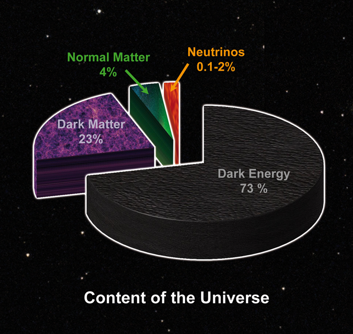
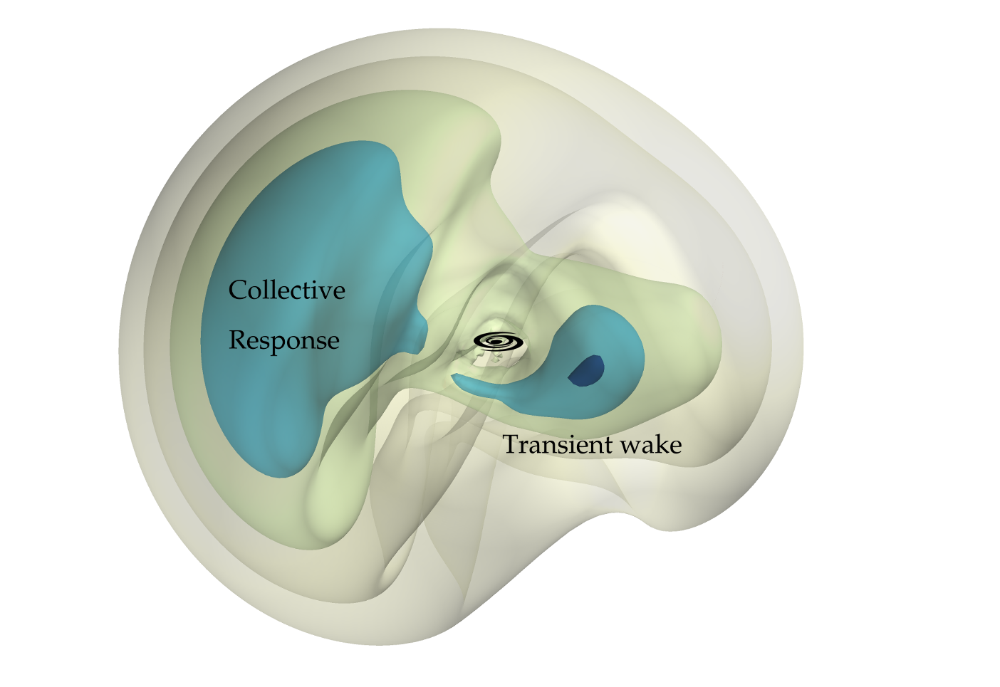
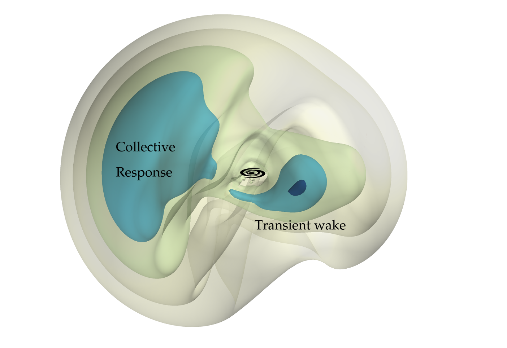
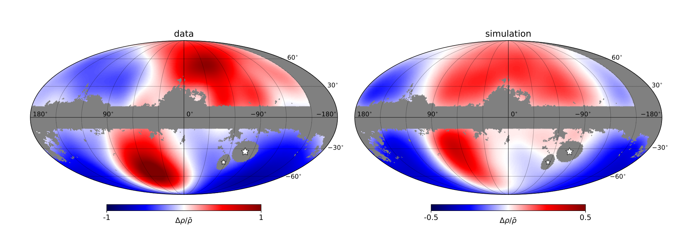
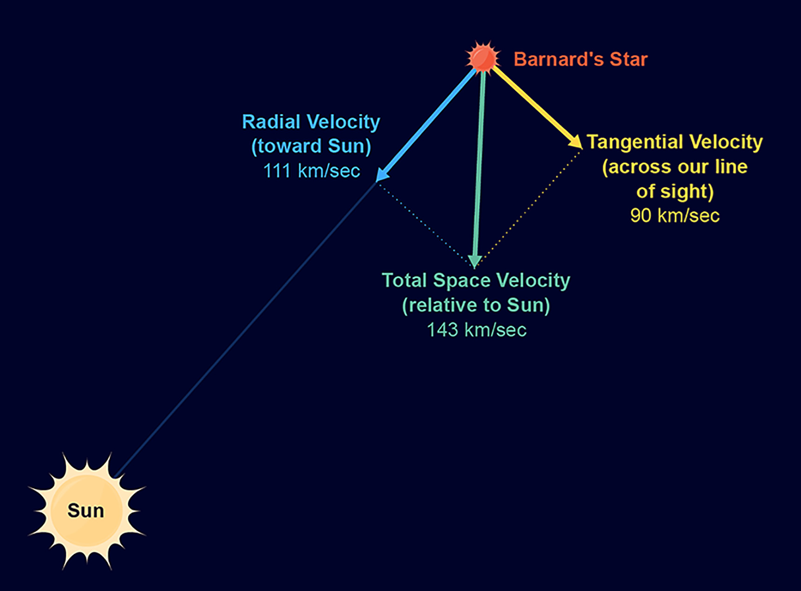

Midiendo la distribución de Materia Oscura
en la Vía Láctea con el Observatorio
Vera Rubin
 


Stephanie Carolina Cely
Nicolás Garavito, Veronica Arias.
Qué compone la Vía Láctea?
Qué compone la Vía Láctea?
Evidencia dinámica de su existencia por curvas de rotación
Estructura
Propiedades de la materia oscura e indicios sobre modelos del universo.
Gran Nube de Magallanes (LMC)


Representa el 10%-20% de masa total de la Vía Láctea y se encuentra a 50 kpc de distancia.
La Via Lactea y la Gran Nube de Magallanes. Créditos: Nina McCurdy / NickRisinger / NASA.
El halo estelar traza el potencial del de materia oscura

Movimiento reflejo del halo de materia oscura
 

Fricción dinámica

Observaciones tentativas del dark matter wake
Cómo medir velocidades en astronomia?
Movimiento propio

Como detectar obsevacionalmente velocidades en 3D?
- Campo de visión de 9.6 grados cuadrados
- Luna ocupa 0.2 grados
- 4300 imágenes para cubrir el cielo del hemisferio sur.
- Tarda 5 noches (12 años otros observatorios).
- Mayor volumen de datos (1000 veces más informacion)
- 100x más profundidad.
El LSST recopilará datos de la interacción

Resultados
Perturbación inducida por la órbita de la Gran Nube de Magallanes


Intuición fisica: Momento angular delimita espacialmente el wake?
Analisis de datos
- Simulaciones de N-cuerpos. Código GADGET-4
- 1 millón de partículas.
- 2 set de datos:
- Estado inicial, halo sin perturbacion
- Luego de interaccion con LMC
- Datos: posiciones y velocidades en 3D con su id
- Histogramas: Posición, cálculo de momento angular usando la velocidad de las partículas y su id.
- Clasificación en regiones de bajo y alto momento angular
Momento angular L en eje x en función de la distancia r
Parámetros de selección
La ubicación de las partículas con momento angular bajo
corresponde a la de la estela de materia oscura.

La ubicación de las partículas con momento angular bajo
corresponde a la de la estela de materia oscura.
Conclusiones
La nube de Magallanes induce una estela de materia oscura
en el halo de la Vía Láctea debido a la fricción dinámica.
El observatorio Vera Rubin va a proporcionar un mapa
sin precedentes del halo estelar de la Vía Láctea en 5D.
(posiciones y movimientos propios)
Estos datos seran ideales para detectar la estela de
materia oscura
Estrellas asociadas a la estela de materia oscura pueden
ser detectadas por su cambio en momento angular.
Trabajo a futuro
Seguir refinando el método de selección.
Implementar procesos de automatización de este algoritmo.
Aplicar el método en simulaciones cosmológicas (FIRE).
Seguimiento al proyecto


https://www.notion.so/wakefinder
https://github.com/tonalidae/wakefinder
https://tonalidae.github.io/wakefinder-symposium
Gracias!